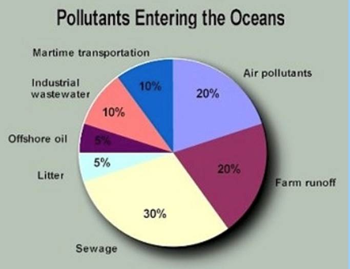
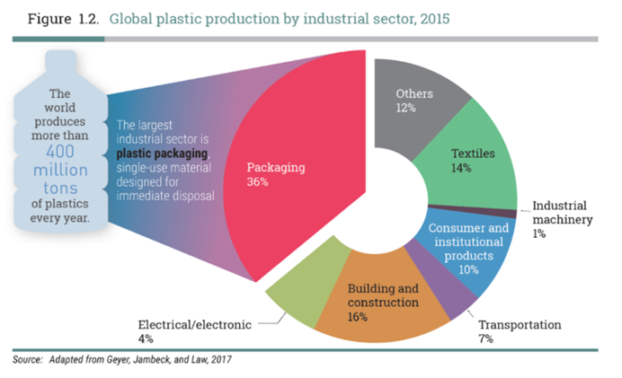

 
Other pollutants
Many chemical pollutants are so new in the environment, we do not know how dangerous they are. They are tested in a laboratory but not on an entire marine ecosystem. Metals such as mercury and slowly degrading chemicals threaten inland and coastal waters. In the USA over 800 contaminants were identified in the waters and sediment of the Great Lakes. These toxic materials harm wildlife, and in the food chain they contaminate fish and shellfish that we consume.
Dioxins are very toxic. They can cause genetic changes in marine life, and are suspected of causing cancer in human beings. The industrial compounds known as PCBs (polychlorinated biphenyls) can cause reproductive problems in some animals, and accumulate as they pass along the food chain.
Salinity
Salinity levels on land and in rivers are increasing, due to the ongoing farming practice of substituting native vegetation with shallow-rooted crops. Rising groundwater levels bring salt to the surface and rain washes it into the rivers. The salt affects ground level vegetation, wetlands and other water bodies. The consequences of salinity are costly, both economically and ecologically. Farmland, buildings, infrastructure and habitats are destroyed by salt.
Grey water
Modern societies produce vast amounts of grey water, i.e. waste water which is not contaminated with toilet water. Some of this can be recycled in gardens. It should be noted that health departments are cautious about re-using shower and bath water, which can be contaminated by body wastes and could lead to infection. Kitchen water often contains grease and highly toxic detergents that are damaging to the soil. In addition, sewer systems are often designed to be flushed with grey water.